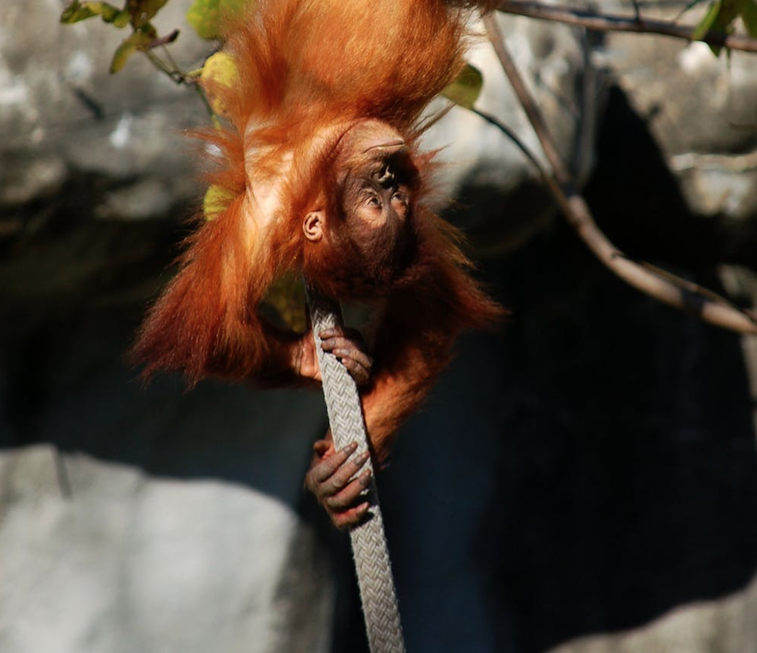

Test
Save the apes is a non-profit charity that is designed to educate both younger and older generations about the issues facing great apes and how to help. Most of the issues discussed will be anthropogenic. This means that they were caused by humans. Save the apes believes that no unnatural harm should come to animals due to human greed, and so, we have dedicated this website to teaching people not only what issues are facing these apes, but also how you can do your part in helping to stop any more of this damage from occurring, maybe even helping to reverse the damage that has been done already.
For more information on 'What are Apes?', click on the image below:
